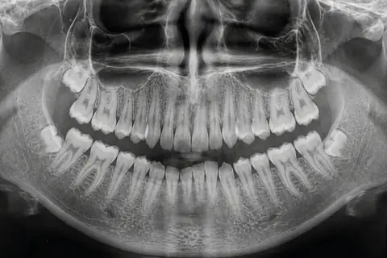

ผ่าฟันคุด หนองปรือ พัทยา ผ่าและถอนฟันคุด ที่คลินิกทันตกรรมกู๊ดดี้ ใกล้สี่แยกมิตรกมล
ปวดฟันคุด เหงือกท้ายฟันบวม หรือหมอฟันบอกว่าต้องผ่า มาเอกซเรย์ดูตำแหน่งฟันที่คลินิก ทันตแพทย์แจ้งราคาก่อนทำ ใช้ประกันสังคมผ่าฟันคุดได้ตามเงื่อนไข

ผ่าฟันคุดที่นี่ สรุปก่อนจองคิว
- จ่ายเอง เริ่มต้น
- 1,500 บาทต่อซี่หมอแจ้งราคาจริงหลังดูเอกซเรย์
- ใช้สิทธิ
- ประกันสังคม วงเงินแยกจาก 900 บาทต่อปี ไม่เกิน 1,500 บาทต่อซี่ กรณีไม่ซับซ้อน และไม่เกิน 2,500 บาทต่อซี่ กรณีต้องกรอกระดูก บัตรทองไม่ครอบคลุม
- เจ็บไหม
- ระหว่างผ่าใช้ยาชาเฉพาะที่ ส่วนใหญ่รู้สึกแรงกดมากกว่าความเจ็บ หลังยาชาหมดอาจปวดและบวมได้ ทันตแพทย์จ่ายยาและบอกวิธีดูแลตัวเอง
- จองคิว
- LINE @goodydentalclinic หรือโทร 065-165-5495 ถ้ามีฟิล์มเอกซเรย์เดิม ถามทาง LINE ได้ว่าใช้ประกอบได้ไหม
- ใช้เวลาและพักฟื้น
- โดยทั่วไปผ่าประมาณ 20 ถึง 60 นาทีต่อซี่ ปวดบวมมักมากที่สุดช่วง 2 ถึง 3 วันแรก อาการปวดส่วนใหญ่หายใน 7 ถึง 10 วัน นัดตัดไหม 7 ถึง 14 วันหลังผ่า งานทั่วไปมักทำได้ตามปกติ แต่ควรงดออกกำลังกายหนัก หมอจะบอกเวลาพักฟื้นของคุณหลังดูเอกซเรย์
ผ่าฟันคุดราคาเท่าไหร่ ใช้ประกันสังคมได้ไหม
ราคาขึ้นกับตำแหน่งฟัน ความลึก และความใกล้เส้นประสาท ทันตแพทย์ดูเอกซเรย์แล้วแจ้งค่าใช้จ่ายทั้งหมดก่อนเริ่มผ่า
- ผ่าฟันคุด ฟันฝังหรือขึ้นเอียง
- จ่ายเอง เริ่มต้น1,500 บาทต่อซี่ เริ่มต้น ขึ้นกับความยาก
- ใช้สิทธิ ประกันสังคม ไม่เกิน 1,500 บาทต่อซี่ กรณีไม่ซับซ้อน ไม่เกิน 2,500 บาทต่อซี่ กรณีต้องกรอกระดูก แยกจากวงเงิน 900 บาทต่อปี
- หมอดูเอกซเรย์แล้วแจ้งราคาทั้งหมดก่อนผ่า
- ถอนฟันคุด ฟันขึ้นตรง
- จ่ายเอง เริ่มต้นแจ้งหลังตรวจ
- ใช้สิทธิ ประกันสังคม ใช้วงเงินขูด อุด ถอน 900 บาทต่อปี
- ฟันขึ้นเต็มซี่ ตั้งตรง ถอนได้เลย ไม่ต้องเปิดเหงือก
- บัตรทอง
- จ่ายเอง เริ่มต้นไม่ครอบคลุมผ่าฟันคุด
- ใช้สิทธิ ใช้ได้กับขูดหินปูน อุดฟัน ถอนฟัน
- ทักไลน์ถามเรื่องสิทธิก่อนมา
ราคาเป็นบาท หมอแจ้งค่าใช้จ่ายทั้งหมดก่อนเริ่มผ่า
ถ้าคลินิกเป็นสถานพยาบาลคู่สัญญาประกันสังคม คลินิกเบิกกับประกันสังคมให้โดยไม่ต้องสำรองจ่าย ถ้าไม่ใช่คู่สัญญา ต้องจ่ายเองก่อนแล้วยื่นขอเงินคืนผ่าน e-Self Service หรือสำนักงานประกันสังคม ผ่าฟันคุดที่นี่ใช้แบบไหน ทัก LINE ถามก่อนนัด อ่านวิธีใช้สิทธิที่ ประกันสังคม ทำฟัน
ราคาเริ่มต้น ราคาจริงหมอแจ้งหลังตรวจ
ทักไลน์ปรึกษาก่อนขั้นตอนผ่าฟันคุด ตั้งแต่เอกซเรย์ถึงตัดไหม
- ตรวจและเอกซเรย์ตรวจในช่องปาก ถ่ายเอกซเรย์ดูตำแหน่งฟันคุดและเส้นประสาท ใช้เอกซเรย์ 3 มิติเมื่อรากฟันอยู่ใกล้เส้นประสาท
- วางแผนและแจ้งราคาทันตแพทย์อธิบายวิธีทำ ความเสี่ยง และค่าใช้จ่าย ก่อนให้คุณตัดสินใจ
- ฉีดยาชาและผ่าใช้ยาชาเฉพาะที่ ทั่วไปใช้เวลาประมาณ 20 ถึง 60 นาทีต่อซี่ ขึ้นกับความยาก
- รับยาและคำแนะนำรับยาตามที่ทันตแพทย์สั่ง พร้อมข้อปฏิบัติหลังผ่า
- นัดตัดไหมทั่วไป 7 ถึง 14 วันหลังผ่า ทันตแพทย์ตรวจแผลอีกครั้ง

รีวิวจากคนไข้
อ่านรีวิวที่คนไข้เขียนไว้เองในเพจ Facebook และ Google Maps ของคลินิก
ฟันคุดแบบไหนต้องผ่า แบบไหนเฝ้าดูได้
ฟันคุด คือฟันที่ขึ้นมาในช่องปากไม่ได้ตามปกติ เพราะติดฟันซี่ข้างหน้า ติดกระดูก หรือมีเหงือกคลุมอยู่ ส่วนใหญ่เป็นฟันกรามซี่ที่สาม ฟันคุดไม่จำเป็นต้องเอาออกทุกซี่ ทันตแพทย์ตัดสินจากอาการร่วมกับภาพเอกซเรย์ ถ้าฟันขึ้นเต็มซี่และตั้งตรง ใช้วิธีถอนฟันคุด ไม่ต้องเปิดเหงือก

ภาพวาดแสดงฟันกรามซี่ที่สอง (เส้นดำ) และฟันคุด (เส้นเขียว) เส้นประคือขอบกระดูก
ขึ้นตรงแต่ไม่เต็มซี่
- ที่เห็นในปาก
- เห็นฟันบางส่วน มีเหงือกคลุม
- ปัญหาที่พบได้
- เศษอาหารติด เหงือกรอบฟันอักเสบ
เอียงไปข้างหน้า
- ที่เห็นในปาก
- มุมฟันชนฟันกรามซี่ที่สอง
- ปัญหาที่พบได้
- ฟันข้างเคียงผุตรงจุดที่ชน
นอนตะแคง
- ที่เห็นในปาก
- มักมองไม่เห็น
- ปัญหาที่พบได้
- กดรากฟันข้างเคียง ปวดเป็นพักๆ
ฝังในกระดูกทั้งซี่
- ที่เห็นในปาก
- มองไม่เห็น ต้องเอกซเรย์
- ปัญหาที่พบได้
- ส่วนใหญ่ไม่มีอาการ มักติดตามดู
ทันตแพทย์มักแนะนำให้เอาออกเมื่อ
- เหงือกรอบฟันคุดบวมหรือเป็นหนองซ้ำหลายครั้ง
- ฟันคุดผุ หรือทำให้ฟันกรามซี่ที่สองผุ
- มีถุงน้ำ ฝีหนอง หรือรากฟันข้างเคียงถูกทำลาย
- เศษอาหารติดซ้ำจนดูแลไม่ได้
- ต้องวางแผนจัดฟันหรือทำฟันปลอม
มักเฝ้าดูได้เมื่อ
- ฟันขึ้นเต็มซี่ ตั้งตรง แปรงได้ทั่ว
- ฝังในกระดูกทั้งซี่ ไม่มีอาการ ไม่มีถุงน้ำ
- อยู่ใกล้เส้นประสาทมาก และการเอาออกเสี่ยงกว่าประโยชน์
เฝ้าดูแปลว่าตรวจฟันและเอกซเรย์ซ้ำตามนัด อ่านเพิ่มที่ ฟันคุด คืออะไร
ข้อดีและผลข้างเคียงที่ควรรู้ก่อนผ่า
เมื่อเอาฟันคุดออกแล้ว
- ลดโอกาสปวดหรือเหงือกอักเสบซ้ำจากฟันซี่นั้น
- ทำความสะอาดฟันกรามซี่ข้างเคียงได้ง่ายขึ้น
- ลดความเสี่ยงฟันข้างเคียงผุจากเศษอาหารสะสม
ผลข้างเคียงที่อาจเกิด
- ปวด บวม ช้ำ อ้าปากได้น้อยลง ช่วง 2 ถึง 3 วันแรก
- เลือดซึมจากแผลในวันแรก
- เบ้าฟันแห้ง ปวดมากขึ้นหลังวันที่ 2 ถึง 4 พบบ่อยขึ้นในคนสูบบุหรี่
- แผลติดเชื้อ มีหนอง กลิ่น หรือไข้
- ชาริมฝีปาก คาง หรือลิ้น พบได้น้อย เมื่อรากฟันอยู่ใกล้เส้นประสาท
ดูแลตัวเองหลังผ่าฟันคุด
- กัดผ้าก๊อซให้แน่นตามเวลาที่ทันตแพทย์บอก
- ประคบเย็นที่แก้มใน 24 ชั่วโมงแรก
- งดบ้วนน้ำแรง ดูดหลอด และสูบบุหรี่ในช่วงแรก
- ทานอาหารอ่อน ไม่ร้อนจัด และทานยาตามที่ทันตแพทย์สั่ง
- แปรงฟันได้ตามปกติ เลี่ยงบริเวณแผล
- งานทั่วไปมักทำได้ตามปกติ งดออกกำลังกายหนัก
อ่านต่อ ผ่าฟันคุดกี่วันหาย และ ปวดฟันคุด
อาการแบบไหนต้องไปโรงพยาบาลทันที
- บวมลามไปใต้ตา ลำคอ หรือใต้คางอย่างรวดเร็ว
- หายใจลำบาก กลืนลำบาก หรือพูดลำบาก
- ไข้สูง หนาวสั่น อ่อนเพลียมาก
อาการเหล่านี้อาจเป็นการติดเชื้อที่ลุกลาม ไม่ควรรอนัดคลินิก
คำถามเรื่องผ่าฟันคุด
ผ่าฟันคุดราคาเท่าไหร่
ที่คลินิกทันตกรรมกู๊ดดี้ ถ้าจ่ายเองเริ่มต้น 1,500 บาทต่อซี่ ราคาจริงขึ้นกับตำแหน่งและความยากของฟันคุดที่เห็นจากเอกซเรย์ หมอแจ้งราคาจริงหลังดูเอกซเรย์ ก่อนเริ่มทำ
ผ่าฟันคุดเจ็บไหม
ระหว่างผ่าทันตแพทย์ฉีดยาชาเฉพาะที่ จึงมักรู้สึกแรงกดมากกว่าความเจ็บ หลังยาชาหมดอาจปวดและบวมได้ ทันตแพทย์จะจ่ายยาและบอกวิธีดูแลตัวเอง ความรู้สึกแต่ละคนไม่เท่ากัน
ใช้สิทธิประกันสังคมผ่าฟันคุดได้ไหม
ได้ ตั้งแต่ 1 พ.ค. 2569 ผู้ประกันตนมาตรา 33 และ 39 มีวงเงินผ่าฟันคุดแยกจากวงเงินขูด อุด ถอน 900 บาทต่อปี ไม่เกิน 1,500 บาทต่อซี่ กรณีไม่ซับซ้อน และไม่เกิน 2,500 บาทต่อซี่ กรณีต้องกรอกระดูก ถ้าคลินิกเป็นสถานพยาบาลคู่สัญญาประกันสังคม คลินิกเบิกกับประกันสังคมให้โดยไม่ต้องสำรองจ่าย ถ้าไม่ใช่คู่สัญญา ต้องจ่ายเองก่อนแล้วยื่นขอเงินคืนผ่าน e-Self Service หรือสำนักงานประกันสังคม ผ่าฟันคุดที่นี่ใช้แบบไหน ทัก LINE ถามก่อนนัด
ใช้บัตรทองผ่าฟันคุดได้ไหม
สิทธิบัตรทองที่คลินิกครอบคลุมขูดหินปูน อุดฟัน และถอนฟัน ผ่าฟันคุดไม่อยู่ในสิทธิ ทักไลน์เช็กสิทธิก่อนมาได้
ผ่าฟันคุดใช้เวลานานไหม ต้องหยุดงานไหม
โดยทั่วไปประมาณ 20 ถึง 60 นาทีต่อซี่ ขึ้นกับความยาก หลังผ่างานทั่วไปมักทำได้ตามปกติ แต่ควรงดออกกำลังกายหนัก หมอจะบอกเวลาของคุณหลังดูเอกซเรย์
ผ่าฟันคุดกี่วันหาย
อาการบวมมักมากที่สุดช่วง 2 ถึง 3 วันแรกแล้วค่อยๆ ลดลง อาการปวดส่วนใหญ่หายใน 7 ถึง 10 วัน นัดตัดไหมประมาณ 7 ถึง 14 วันหลังผ่า ถ้าผ่ายาก แผลใช้เวลาหายนานกว่านั้น อ่านเรื่องผ่าฟันคุดกี่วันหาย
ถอนฟันคุดกับผ่าฟันคุดต่างกันอย่างไร
ถอนฟันคุดใช้เมื่อฟันขึ้นพ้นเหงือกเต็มซี่และอยู่ในแนวตรง ส่วนผ่าฟันคุดใช้เมื่อฟันฝังในกระดูกหรือขึ้นเอียง ต้องเปิดเหงือก อาจกรอกระดูกและแบ่งฟันเป็นชิ้นเล็กก่อนนำออก แล้วเย็บแผล ทั้งสองแบบทำภายใต้ยาชาเฉพาะที่
เอาฟันคุดออกพร้อมกันหลายซี่ได้ไหม
ได้ในหลายกรณี ทันตแพทย์มักเอาออกข้างเดียวกันบนและล่างในครั้งเดียว เพื่อให้ยังเคี้ยวอีกข้างได้ จำนวนซี่ต่อครั้งขึ้นกับความยากของฟันและสุขภาพของผู้ป่วย
ตั้งครรภ์อยู่ เอาฟันคุดออกได้ไหม
หัตถการที่ไม่เร่งด่วนมักแนะนำให้รอหลังคลอด ถ้ามีอาการอักเสบ ทันตแพทย์จะรักษาอาการก่อนและเลือกยาที่เหมาะกับคนตั้งครรภ์ แจ้งอายุครรภ์ทุกครั้งที่พบทันตแพทย์
ข้อมูลในหน้านี้เป็นความรู้ทั่วไป ไม่ใช่การวินิจฉัย ควรให้ทันตแพทย์ตรวจก่อนตัดสินใจรักษา
บริการที่เกี่ยวข้อง
จองคิวตรวจฟันคุด หนองปรือ พัทยา
คลินิกทันตกรรมกู๊ดดี้ Goody Dental Clinic222/20 ถ.พรประภานิมิต ต.หนองปรือ อ.บางละมุง จ.ชลบุรี 20150
ใกล้สี่แยกมิตรกมล มีที่จอดรถหน้าคลินิก
เปิดทุกวัน ถึง 20.00 น.
| จันทร์ถึงศุกร์ | 10.00 ถึง 20.00 น. |
|---|---|
| เสาร์ อาทิตย์ | 09.30 ถึง 20.00 น. |

ทัก LINE บอกอาการและสิทธิที่จะใช้ เจ้าหน้าที่หาคิวให้ หรือโทรถามได้ในเวลาทำการ